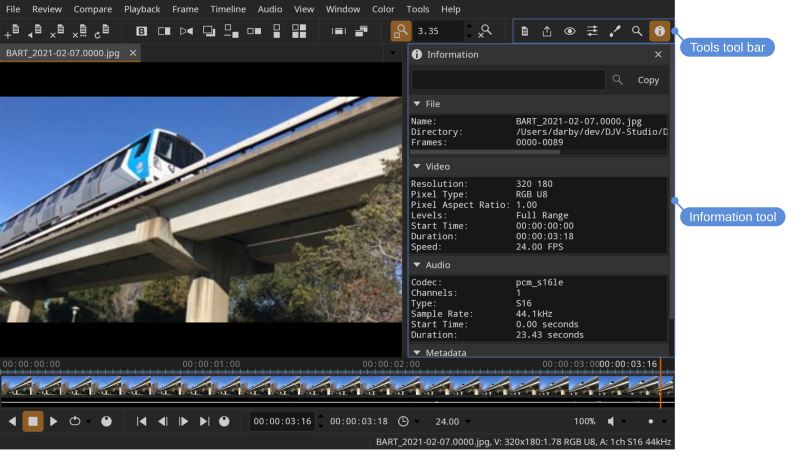
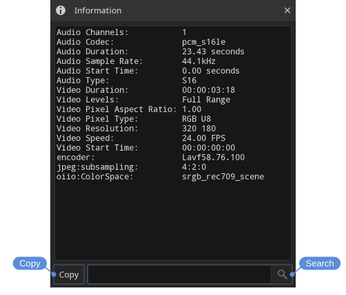
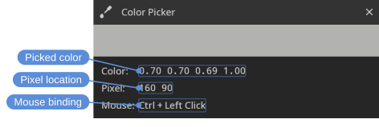
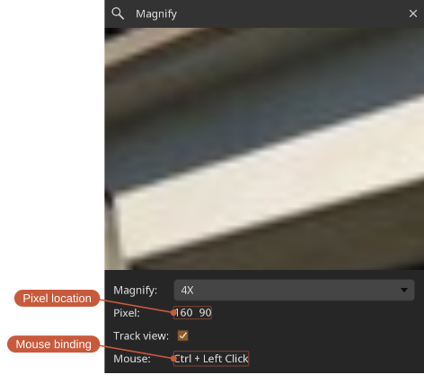

Tools
DJV's features are organized into tools. Each tool opens in a panel on the right side of the main window, and only one tool is shown at a time. Tools can be opened from the Tools menu or the Tools tool bar, and each has a default keyboard shortcut.
| Tool | Shortcut | Purpose |
|---|---|---|
| Files | F1 | Manage open files, layers, and comparison |
| Export | F2 | Write out images, image sequences, and movies |
| View | F3 | View options — grid, background, outline, and more |
| Color | F4 | OpenColorIO, LUTs, and color adjustments |
| Color Picker | F5 | Sample pixel color values |
| Magnify | F6 | Magnify a region of the view |
| Information | F7 | View file metadata |
| Audio | F8 | Audio output, volume, and sync |
| Devices | F9 | Output to a video device |
| Settings | F10 | Application settings |
| Messages | F11 | Application messages |
| System Log | F12 | Low-level system log |
The Files, View, Color, Export, Audio, and Settings tools each have their own page. The remaining tools are described below.

Information
The Information tool displays the metadata of the current file: video and audio format details (codec, resolution, pixel type, sample rate, and so on) along with any tags embedded in the file, such as camera make and model or creation date.
Locations: Tools menu, Tools toolbar
Shortcut: F7
Use the search box to filter the list to matching entries, and the Copy button to copy the information to the clipboard.

Color picker
The Color picker tool samples the color of a pixel in the view.
Locations: Tools menu, Tools toolbar
Shortcut: F5
Pick a pixel with Ctrl + left mouse button (the binding can be changed in the Mouse section of the Settings tool). The tool shows a color swatch, the sampled RGBA values, the pixel position, and the current mouse binding.

Magnify
The Magnify tool shows a magnified view of the area around the picked pixel — handy for inspecting fine detail.
Locations: Tools menu, Tools toolbar
Shortcut: F6
Pick a pixel with Ctrl + left mouse button. The magnification level can be set from 2X up to 128X.

1 (see View).Devices
The Devices tool sends the view to an external video output device, such as a Blackmagic Design card — useful for review on a broadcast monitor.
Locations: Tools menu, Tools toolbar
Shortcut: F9
The tool provides options for the device, display mode, pixel type, and 4:4:4 SDI output.
Messages and system log
The Messages tool shows application messages such as warnings and errors, while the System Log tool shows a more detailed, low-level log. Both are useful when reporting a problem (see Troubleshooting).
Locations: Tools menu, Tools toolbar
Shortcuts:
- Messages: F11
- System Log: F12
Each tool can Copy its contents to the clipboard or Clear them, and has an Auto-scroll option to keep the newest entries in view.